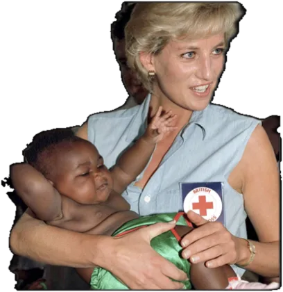
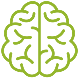

Visão geral
- Eixo Existencial
- Amor
- Tríade
- Afetiva
- C-Modes
- C1 · C3
- A partir da Confiança, assume traços do
- E-Mode 4
- A partir do Medo, assume traços do
- E-Mode 8
A partir do Medo
Perspectiva · o que pensa
Tenho que ser necessário.
Não serei amado nem desejado se não for necessário.
Afetiva · o que sente
Medo de não ser amado nem desejado.
Efetiva · o que faz
Garantir o afeto.
Ajuda interessada e dependência emocional.
A partir da Confiança
Perspectiva · o que pensa
Sou amado.
Sou digno de ser amado e de amar.
Afetiva · o que sente
Amor incondicional.
Efetiva · o que faz
Amar livremente.
Entrega livre e desinteressada.
Exemplos

Lady DiPrincesa de Gales- Susana GiménezApresentadora
- ShakiraCantora
- Madre Teresa de CalcutáReligiosa
O Eixo Existencial do Amor
O Eixo Existencial do Amor se configura quando, nos primeiros anos de vida, a criança desenvolve uma atenção especial ao mundo dos vínculos afetivos. Esse Eixo se vincula ao âmbito do reconhecimento emocional, da conexão com os outros, do cuidado mútuo e da expressão do afeto. A experiência se organiza em torno da importância de construir relações próximas, significativas e emocionalmente disponíveis.
Desse modo, o Amor se constitui como um Eixo articulador da existência, que marca uma orientação para o encontro, a disponibilidade emocional e a construção de laços profundos e recíprocos.
O Eixo do Amor vivido a partir do Medo
A pessoa vive o amor como algo que precisa ser conquistado, mantido ou protegido constantemente. O vínculo se torna frágil e condicionado, e a possibilidade de ser rejeitada, ignorada ou de não ser suficiente para o outro gera uma forte ansiedade emocional. Começa a desenvolver estratégias para se tornar imprescindível ou para se entregar ao outro, esperando garantir, por meio dessa entrega, o afeto de que precisa.
A partir dessa vivência, pode desenvolver:
- Uma necessidade constante de ser útil ou necessária para se sentir querida.
- Tendência a se antecipar às necessidades do outro, descuidando das próprias.
- Dificuldade para reconhecer seus próprios desejos ou emoções se não estiverem mediados pelo vínculo.
- Angústia diante da rejeição, da indiferença ou da distância emocional.
- Comportamentos que buscam conquistar o afeto, mesmo à custa do próprio equilíbrio.
O Amor não é vivido como um laço livre, e sim como um laço condicionado. A pessoa se volta para os outros com intensidade, mas muitas vezes desconectada de si mesma, tentando garantir o carinho que sente que precisa para existir plenamente.
O Eixo do Amor vivido a partir da Confiança
A pessoa vive o amor como uma experiência livre, mútua e segura. Já não precisa se esforçar para merecer afeto, nem temer que o vínculo desapareça se não der algo em troca. Há uma profunda certeza interna de que é possível amar e ser amada simplesmente por ser quem é.
A partir dessa vivência, desenvolve:
- Capacidade de se vincular com autenticidade, sem depender emocionalmente do outro.
- Uma entrega afetiva generosa, que não espera retribuição imediata nem constrói vínculos a partir da necessidade.
- Habilidade para reconhecer e expressar suas próprias necessidades emocionais sem culpa nem medo.
- Uma presença afetiva profunda, que pode acompanhar e também se retirar quando necessário, sem perder sua própria conexão.
- Uma autoestima sólida, baseada no reconhecimento próprio, além da validação afetiva externa.
O amor é vivido como um vínculo recíproco e estável, sustentado por uma disponibilidade afetiva autêntica. A pessoa não orienta sua entrega em função do reconhecimento externo: sua capacidade de amar surge de um registro interno integrado, seguro e suficiente em si mesmo.
Contexto da infância
Explorar o contexto infantil permite compreender mais profundamente como certos traços se desenvolvem desde cedo. Muitos dos padrões de comportamento que observamos nos adultos têm raízes em experiências e dinâmicas familiares da infância. Compreender o contexto em que se estabeleceu o modo como enfrentamos nossa existência desde cedo nos permite entender como enfrentamos hoje as situações e os desafios atuais.
Crianças prestativas e colaborativas
Desde cedo, a criança com E-Mode 2 tende a se destacar pelo desejo natural de se conectar com os outros e de ajudá-los em suas necessidades. É sensível às emoções alheias e tem grande habilidade para perceber as necessidades não expressas de quem está ao seu redor.
- Interiorizaram a mensagem de que suas necessidades não são tão importantes quanto as dos outros.
- Sua autoestima está ligada à ideia de ser valiosas e necessárias para os outros.
- Podem buscar aprovação e afeto oferecendo ajuda e atenção aos outros.
- Viver a conexão e o amor por meio da atenção e do cuidado se torna fundamental para seu senso de valor.
- Tendem a deixar suas próprias necessidades em segundo plano para garantir que os outros estejam contentes.
- Nas brincadeiras e nas interações sociais, costumam assumir o papel de cuidadoras, oferecendo ajuda e apoio aos colegas.
Contexto familiar positivo
- Um ambiente em que se valorizavam a empatia, a bondade e o cuidado com os outros.
- Pais ou cuidadores que foram modelos de generosidade e compaixão.
- Expressões abertas de carinho, validação emocional e afetividade.
- Uma comunicação emocional saudável e a livre expressão dos sentimentos.
- Ensinou-se a importância dos limites saudáveis junto com o cuidado com o outro.
- Oportunidades de participar de atividades comunitárias ou de voluntariado.
Mensagem percebida na infância: "Você é desejado".
Contexto familiar negativo
- Um ambiente em que o amor e a atenção eram condicionais, baseados em cuidar dos outros ou agradá-los.
- A criança assumiu papéis de cuidadora desde muito cedo, acreditando que seu valor dependia de satisfazer os outros.
- Falta de reconhecimento de suas próprias necessidades emocionais.
- Pais ou cuidadores emocionalmente ausentes ou centrados nos próprios problemas.
- Reforço do papel de "cuidador" ou de "pacificador" na família.
- Dificuldade para desenvolver uma identidade independente e reconhecer suas próprias necessidades.
Mensagem percebida na infância: "Não é certo ter necessidades".
A partir do Medo
O que pensa (Perspectiva), o que sente (Afetiva) e o que faz (Efetiva) o E-Mode 2 a partir da dinâmica do Medo.
| PensaPerspectiva | SenteAfetiva | FazEfetiva |
|---|---|---|
| «Se eu ajudar, vão gostar de mim.» | Ansiedade | Oferecer ajuda não solicitada. |
| «Minhas necessidades não são tão importantes quanto as dos outros.» | Ressentimento | Ignorar as próprias necessidades. |
| «Preciso que os outros demonstrem carinho por mim para me sentir valioso.» | Insegurança | Buscar constantemente aprovação emocional. |
| «Tenho que fazer com que precisem de mim para que não me abandonem.» | Frustração | Manipular emocionalmente. |
| «Fiz mais pelos outros do que eles fazem por mim.» | Orgulho | Exagerar sua contribuição ou seu sacrifício. |
| «Se eu disser não, não vão mais me procurar.» | Culpa | Ter dificuldade para dizer "não". |
| «Se não precisarem de mim, vão me deixar.» | Medo | Criar relações dependentes. |
Personagem de referência: Donna Paulsen (Suits)

Perspectiva · PensarA partir do MedoO que pensa?
A partir do medo de não ser desejado nem amado, pode ter pensamentos recorrentes que refletem sua necessidade de ser querido e valorizado. Alguns exemplos da narrativa interna:
- Autovalorização por meio do serviço: "Só tenho valor quando estou ajudando os outros".
- Preocupação com as relações: "Se não precisarem de mim, podem me abandonar".
- Dúvida sobre a reciprocidade: "Faço tanto pelos outros; por que não posso receber o mesmo em troca?".
- Justificação do sacrifício: "Se eu sacrificar minhas necessidades pelos outros, com certeza vão me valorizar".
- Negação das próprias necessidades: "Eu não deveria pensar em mim; isso é ser egoísta".
- Rejeição à rejeição: "Não suporto a ideia de que alguém não goste de mim".
- Medo da solidão: "Estar sozinho significa que não sou bom o suficiente".
- Insegurança: "Será que exagerei? Vão me ver como alguém desesperado por atenção?".
- Idealização do amor incondicional: "O verdadeiro amor significa dar sem esperar nada em troca".
Esses pensamentos podem levá-lo a se concentrar excessivamente nas necessidades dos outros e a descuidar das próprias. É fundamental que aprenda a se valorizar por si mesmo e a entender que ser amado não depende exclusivamente de sua capacidade de ajudar.
O que sente?
A partir do medo de não ser amado ou valorizado, pode experimentar uma variedade de emoções que refletem sua necessidade de conexão e reconhecimento:
- Ansiedade: preocupação constante com a forma como os outros o percebem e com estar sendo útil ou gentil o suficiente para conquistar seu amor e seu apreço.
- Tristeza: decepção quando percebe que seus esforços para ajudar não são reconhecidos ou valorizados.
- Frustração: irritação ou ressentimento se sente que seus sacrifícios não são correspondidos ou que os outros não respondem ao seu cuidado como esperava.
- Medo da rejeição: o temor profundo de ser deixado de lado se não cumprir as expectativas dos outros ou deixar de ser necessário; medo de ficar sozinho na vida.
- Culpa: ao priorizar suas próprias necessidades ou quando não consegue ajudar alguém.
- Sobrecarga: sente-se emocionalmente sobrecarregado pela pressão autoimposta de cuidar dos outros.
- Vazio: uma sensação de insuficiência quando não está numa relação de dar e receber, ou ao perceber que sua ajuda busca validação.
- Ciúme ou inveja: diante de quem recebe o amor ou a atenção que deseja, ou de quem parece mais necessário ou valorizado.
- Negação: pode reprimir as emoções negativas para sustentar a imagem de ser sempre gentil e positivo.
Essas emoções, embora sejam respostas naturais ao medo de não ser amado, podem levá-lo a condutas contraproducentes e a relações pouco saudáveis.
O que faz?
A partir do Medo, é movido pelo desejo de ser amado e valorizado, e pelo temor de não ser querido, de não ser valorizado ou de ser rejeitado. Pode mostrar comportamentos voltados a conquistar a aceitação e o afeto dos outros:
- Ajudar em excesso: tenta agradar oferecendo-se constantemente para ajudar, mesmo quando não pedem ou quando fazer isso vai contra suas próprias necessidades.
- Buscar validação: busca reconhecimento e apreço por seus esforços, e se sente ferido ou rejeitado se não recebe a gratidão esperada.
- Adaptabilidade excessiva: muda suas opiniões ou desejos para se alinhar aos dos outros, e perde contato com seus próprios sentimentos.
- Relações centradas no outro: concentra-se intensamente nas necessidades e nos problemas alheios, ignorando os próprios, e às vezes se torna invasivo ou controlador sob a aparência de "ajudar".
- Manipulação afetiva: recorre, às vezes de forma inconsciente, a estratégias emocionais para manter as pessoas por perto e se sentir indispensável.
- Negar suas próprias necessidades: tem dificuldade para reconhecer e expressar o que precisa, e sempre prioriza os outros.
- Sensibilidade à rejeição: é extremamente sensível aos sinais de não ser necessário, o que pode levá-lo a buscar atenção.
- Dramatização: exagera seu sacrifício ou seus problemas para chamar a atenção e obter simpatia ou ajuda.
- Relações de dependência: pode criar vínculos em que se sente responsável pelo bem-estar dos outros, com dinâmicas pouco equilibradas.
Seu crescimento pessoal implica aprender a reconhecer e atender suas próprias necessidades, estabelecer limites saudáveis e construir relações mais equilibradas.
A partir da Confiança
O que pensa, o que sente e o que faz o E-Mode 2 a partir da dinâmica da Confiança.
| PensaPerspectiva | SenteAfetiva | FazEfetiva |
|---|---|---|
| «Tudo bem cuidar de mim primeiro.» | Confiança | Estabelecer limites saudáveis. |
| «Pedir ajuda me fortalece e me conecta com os outros.» | Vulnerabilidade | Pedir ajuda quando precisa. |
| «Minhas necessidades são importantes e merecem ser ouvidas.» | Autenticidade | Reconhecer e expressar as próprias necessidades. |
| «Dou porque quero, não porque espero ser recompensado.» | Generosidade | Dar sem esperar nada em troca. |
| «Tudo bem que cada um seja autossuficiente.» | Respeito | Estimular a independência dos outros. |
| «Crescer pessoalmente me torna mais capaz de amar e de ser amado.» | Autovalorização | Investir tempo no próprio crescimento pessoal. |
O que pensa?
Quando vive seu Eixo a partir da Confiança, seus pensamentos refletem maturidade emocional e maior consciência de si mesmo:
- Autovalorização: "Tenho valor e mereço amor, mesmo sem fazer nada pelos outros".
- Limites saudáveis: "Tudo bem dizer não e estabelecer limites para cuidar do meu tempo e da minha energia".
- Independência: "Não preciso que os outros dependam de mim para me sentir completo e valioso".
- Autocuidado: "Cuidar de mim é tão importante quanto cuidar dos outros".
- Equidade: "É justo e necessário receber tanto quanto dou nas minhas relações".
- Autenticidade: "Meus sentimentos e minhas necessidades são importantes e merecem ser expressos de forma aberta e honesta".
- Gratidão genuína: "Sou grato pelas relações que tenho e pelo que recebo delas".
- Desapego da aprovação: "Não preciso da aprovação constante dos outros para me sentir satisfeito".
- Generosidade desinteressada: "Posso oferecer ajuda sem esperar nada em troca e sem sacrificar meu bem-estar".
- Empatia equilibrada: "Posso ter empatia pelos outros sem me responsabilizar pelas emoções deles".
Essa mudança lhe permite passar da busca por validação externa a encontrar uma validação interna, e participar de relações recíprocas e saudáveis, em que pode dar e receber amor de maneira equilibrada.
O que sente?
Suas emoções refletem um estado mais equilibrado e autêntico, que surge de uma conexão profunda com sua própria identidade e suas necessidades:
- Autoaceitação: compaixão e amor por si mesmo, reconhecendo seu valor além de sua utilidade para os outros.
- Gratidão: um apreço profundo pelas relações e pelos vínculos, sem sentir que precisa conquistá-los.
- Satisfação: alegria com a própria vida; aproveita as atividades e os vínculos pelo valor que têm em si mesmos.
- Paz interior: a calma que surge de não buscar aprovação constante.
- Confiança: segurança em suas capacidades e certeza de que é digno de amor e de pertencimento sem precisar agradar.
- Equilíbrio: emoções mais estáveis, porque já não é dominado pela necessidade de atender os outros em detrimento de si.
- Generosidade genuína: alegria ao ajudar a partir de um desejo sincero, não da necessidade de ser necessário.
- Independência emocional: consegue sustentar seu bem-estar sem depender da validação externa.
- Empatia consciente: uma compreensão profunda das emoções alheias, com a sabedoria de não absorvê-las como próprias.
A dependência e a necessidade de ser necessário se transformam num amor genuíno e livre.
O que faz?
Suas ações refletem um equilíbrio maior entre atender os outros e cuidar de si mesmo:
- Autocuidado: reserva tempo para si e atende suas necessidades físicas e emocionais.
- Limites saudáveis: estabelece e sustenta limites claros, e aprende a dizer "não" quando necessário.
- Autenticidade: é honesto sobre seus sentimentos e necessidades, em vez de mudar seu comportamento só para agradar.
- Apoio sem apego: ajuda sem esperar nada em troca e sem se intrometer nos assuntos alheios.
- Empatia equilibrada: compreende e respeita os sentimentos dos outros, sem assumir por completo a tarefa de resolver seus problemas.
- Autoexpressão: expressa-se criativamente e compartilha mais de quem realmente é.
- Reconhecimento do próprio mérito: aceita elogios e reconhecimento por suas conquistas pessoais, não só por ajudar.
- Independência: estimula tanto a própria independência quanto a dos outros, e apoia sem criar dependência.
- Equilíbrio emocional: lida com suas emoções sem se deixar dominar pelo desejo de ser necessário, e encontra satisfação em relações e atividades diversas.
Torna-se mais consciente do próprio valor e encontra uma autoestima que não depende de sua utilidade ou de seu serviço. Isso lhe permite se relacionar de maneira mais saudável e satisfatória, consigo mesmo e com os outros.
Do Medo à Confiança
A partir do Medo: dimensões separadas
A partir da Confiança: dimensões integradas
O processo de integração do E-Mode 2 começa quando ele deixa de agir, sentir e pensar a partir do medo, trabalhando ativamente seus temores e explorando novas possibilidades, e passa a fazê-lo a partir da confiança. Assim, enriquece sua maneira de enfrentar a existência e começa a manifestar traços positivos do E-Mode 4 (a autenticidade, a conexão emocional e a autoexpressão), que geralmente não desenvolveu ou não estimulou o suficiente. Move-se em direção à individualidade e ao autocuidado.
A integração é, portanto, o processo pelo qual se adquire uma gama mais ampla de competências, habilidades e recursos para construir uma existência mais plena e autêntica.
Perspectiva: do Medo à Confiança
É útil adotar um conjunto de pensamentos que estimulem a autoestima, a independência emocional e o cuidado pessoal:
- Da necessidade de ser necessário à autonomia: de "Só tenho valor se os outros precisam de mim" para "Valorizo minha própria companhia e me completo sozinho".
- Do autossacrifício à autopreservação: de "Sempre tenho que colocar os outros em primeiro lugar" para "Minhas necessidades também são importantes".
- Do reconhecimento externo à autovalidação: de "Preciso que os outros me reconheçam para me sentir bem" para "Reconheço e celebro minhas próprias contribuições".
- Da ajuda imposta ao respeito aos limites: de "Tenho que ajudar sempre, mesmo que não me peçam" para "Respeito os limites e a autonomia dos outros".
- Do medo da rejeição à autoaceitação: de "Se eu não fizer isso, vão me rejeitar" para "Sou digno de amor do jeito que sou".
- Da superadaptação à autenticidade: de "Tenho que mudar para agradar os outros" para "Posso ser quem realmente sou e ser aceito".
- Da busca de aprovação à coerência com os próprios valores: de "Faço coisas para que gostem de mim" para "Faço coisas porque estão alinhadas com meus valores".
- Da conexão forçada à conexão genuína: de "Tenho que manter sempre a conexão com os outros" para "Cultivo vínculos significativos, recíprocos e saudáveis".
- Do descuido pessoal ao autocuidado: de "Não tenho tempo para mim" para "Cuidar de mim é uma prioridade".
- Da manipulação à sinceridade: de "Manipulo as situações para que gostem de mim" para "Ajo com sinceridade e construo relações baseadas na honestidade".
Essas mudanças de pensamento são vitais para desenvolver uma autoimagem mais saudável e aprender a se valorizar independentemente de seus atos de serviço.
Afetiva: do Medo à Confiança
Para se conectar com suas próprias emoções e necessidades, pode tentar:
- Reconhecimento emocional: identificar e nomear suas emoções sem julgá-las, reconhecendo que todas são válidas e têm um propósito.
- Processamento emocional: permitir-se sentir cada emoção plenamente, em vez de suprimi-la, ignorá-la ou canalizá-la de imediato para ajudar os outros.
- Comunicação emocional: expressar suas emoções de maneira honesta e direta, em vez de manipular ou esperar que os outros as adivinhem.
- Independência emocional: reconhecer que sua autoestima não depende da aprovação nem do agradecimento dos outros.
- Autocompaixão: ser gentil e compreensivo consigo mesmo, sobretudo diante do erro ou do fracasso, em vez de se criticar.
- Equilíbrio emocional: buscar um equilíbrio entre atender as próprias emoções e as dos outros, sem priorizar sempre o alheio.
- Gratidão interna: agradecer a própria capacidade de sentir e de se conectar emocionalmente, além da reciprocidade externa.
- Desapego emocional saudável: soltar a dependência das respostas e necessidades dos outros, com uma empatia equilibrada em vez de uma relação simbiótica.
- Meditação: ter mais consciência de suas emoções no momento e responder com calma e centramento.
- Autoexploração: um processo de autoconhecimento que explore seus valores, paixões e metas pessoais.
Trabalhando suas emoções dessa maneira, ganha autonomia e consciência de si, precisa de menos validação externa, e suas ações surgem da autenticidade e da autoaceitação.
Efetiva: do Medo à Confiança
Comportamentos que podem ajudar a estimular o autocuidado e os limites saudáveis:
- Autocuidado: dedicar tempo às próprias necessidades e hobbies para nutrir seu bem-estar.
- Estabelecer limites: aprender a dizer "não" e fixar limites claros nas relações para não se sobrecarregar nem se descuidar.
- Pedir ajuda: permitir-se ser vulnerável e pedir apoio quando precisa, reconhecendo que também merece receber.
- Autoexpressão: participar de atividades que estimulem a expressão pessoal e criativa sem buscar aprovação externa.
- Independência: tomar as próprias decisões e passar tempo sozinho para fortalecer a independência emocional.
- Rever as motivações: antes de agir, perguntar-se se a motivação é genuína ou se responde à busca de aprovação.
- Reconhecer seus méritos: celebrar suas conquistas e qualidades sem depender do reconhecimento alheio.
- Gratidão: agradecer tanto o que recebe quanto o que oferece.
- Relações recíprocas: investir em vínculos com uma troca equitativa de dar e receber.
- Autenticidade: ser honesto sobre suas necessidades e emoções, e comunicá-las de forma clara e adequada.
- Beleza e criatividade: cultivar e expressar sua criatividade, encontrando alegria e sentido na estética e na autoexpressão.
Essas condutas o ajudam a reequilibrar sua atenção entre os outros e si mesmo, algo essencial para seu desenvolvimento pessoal e sua integração.
Níveis de integração
Desintegrado
Manipulação e coerção. Teme afastar as pessoas e pode justificar seu comportamento manipulador, tentando fazer com que os outros dependam dele. Pode se tornar obsessivo na busca de amor e atenção, e agir de maneira implacável e pouco apropriada. No pior dos casos, pode desmoronar, assumir o papel de vítima ou de mártir e obrigar os outros a cuidar dele.
- Efetiva: recorre à manipulação e à coerção.
- Afetiva: ressentimento, agressividade e uma ansiedade transbordante.
- Perspectiva: um olhar distorcido, que justifica comportamentos pouco saudáveis e o coloca no lugar de vítima.
Semi-integrado
Complacência e necessidade de aprovação. Começa a se preocupar com não ser querido ou necessário o suficiente, e busca segurança em suas relações por meio da complacência e da bajulação. Pode se tornar possessivo e intrometido, colocando as necessidades dos outros à frente das próprias. Também busca reconhecimento por suas boas ações e pode se ressentir se não o valorizam como espera, o que pode lhe trazer problemas emocionais e físicos.
- Efetiva: busca segurança na aprovação externa e se torna complacente, o que afeta a autenticidade de suas relações.
- Afetiva: predomina a complacência e aumenta a ansiedade pelo reconhecimento emocional.
- Perspectiva: seu olhar fica condicionado pela busca de aprovação externa; ajusta sua forma de pensar para evitar a rejeição.
Integrado
Amor incondicional e autocuidado. Alcança um equilíbrio entre cuidar de si mesmo e amar os outros de maneira incondicional. Reconhece suas próprias necessidades e sentimentos, e pode oferecer amor sem esperar nada em troca. É bondoso, atencioso e generoso, e acompanha os outros com empatia e afeto, compartilhando seus talentos e sua energia de forma genuína.
- Efetiva: equilibra o amor-próprio e o altruísmo; é efetivo no cuidado de si mesmo e no apoio genuíno aos outros.
- Afetiva: vive o amor incondicional e o autocuidado.
- Perspectiva: um olhar positivo, baseado na autenticidade e na generosidade nas relações.
C-Modes: C1 e C3
Os C-Modes (modos complementares) influenciam as características próprias do E-Mode de cada pessoa e as matizam, gerando maior variedade e riqueza nas condutas. São os E-Modes que estão de cada lado do próprio: se alguém tem E-Mode 9, seus C-Modes são o 8 e o 1.
Compreender os C-Modes ajuda a entender a multiplicidade de comportamentos que pessoas com um mesmo E-Mode podem ter. Um E-Mode pode manifestar traços positivos e negativos de um ou de ambos os C-Modes, só os negativos, só os positivos, ou uma combinação.
C-Mode1
Contribuição positiva · Confiança
- Integridade
- Disciplina
- Responsabilidade
Contribuição negativa · Medo
- Rigidez
- Crítica
- Perfeccionismo
C-Mode3
Contribuição positiva · Confiança
- Autoconfiança
- Ambição
- Versatilidade
Contribuição negativa · Medo
- Narcisismo
- Superficialidade
- Competitividade
Tríade afetiva
As três tríades agrupam os E-Modes segundo a dimensão em que se fixa principalmente seu modo de enfrentar a existência: a efetiva (ação), a afetiva (emoção) e a de perspectiva (pensamento).
O E-Mode 2 faz parte da tríade afetiva: abrange as qualidades emocionais que nos ajudam a nos relacionar com outras pessoas e a nos sentir unidos aos outros. Relaciona-se com as emoções, a empatia e a autoimagem.
- Foco: costuma ter consciência das próprias emoções e das dos outros, e se concentra nas relações e na identidade pessoal.
- Busca: atenção e relação.
Desafios
- Generosidade invasiva: às vezes agride entregando-se em excesso, com uma generosidade que pode ser percebida como invasiva.
- Dependência da aprovação: pode depender demais da aprovação e do reconhecimento externos, buscando respostas positivas a seus gestos para sustentar sua autoestima.
- Descuido das próprias necessidades: esquece de cuidar de si porque está concentrado demais em cuidar dos outros.
- Manipulação emocional: em alguns casos, pode manipular emocionalmente para obter o afeto e a atenção que deseja.
Contribuição
- Empatia e generosidade: um desejo genuíno de ajudar os outros, muitas vezes colocando as necessidades alheias antes das próprias.
- Habilidades interpessoais: uma grande facilidade para se relacionar e construir vínculos.
- Capacidade de apoio e cuidado: sempre presente e disposto a sustentar e acompanhar, o que o torna um amigo e um parceiro valioso.
Estratégia de integração e desintegração
| Dimensão | Dinâmica do Medo · estratégia de desintegração | Dinâmica da Confiança · estratégia de integração |
|---|---|---|
| EfetivaFazer |
|
|
| AfetivaSentir |
|
|
| PerspectivaPensar |
|
|
Tática de desintegração
Assume traços do Medo do E-Mode 8
Agressividade, controle, desqualificação.
Tática de integração
Assume traços da Confiança do E-Mode 4
Autenticidade, independência, registro emocional pessoal.